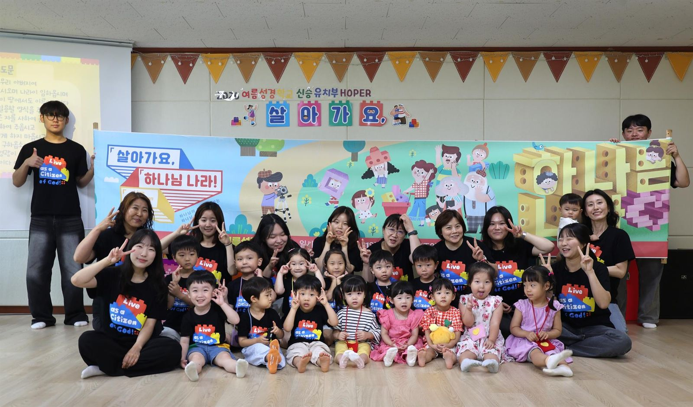
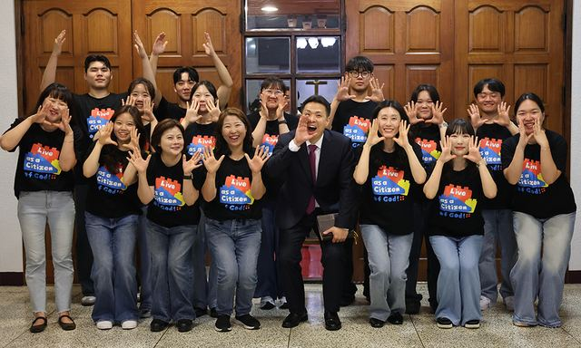
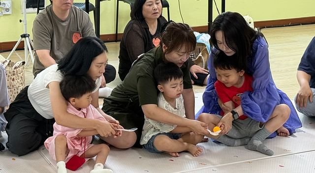
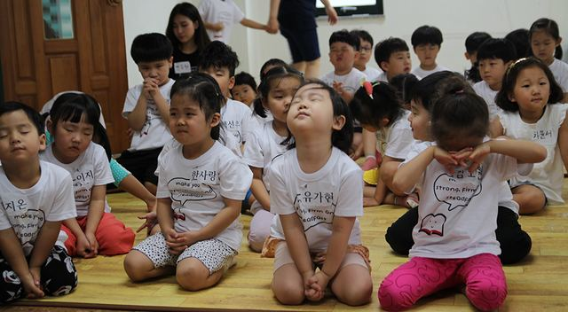
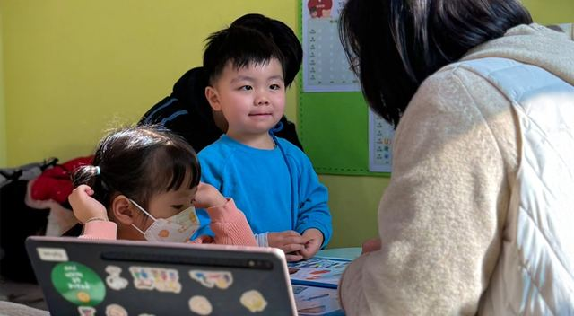
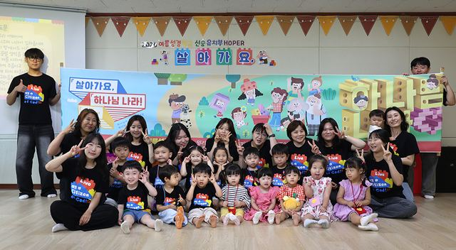
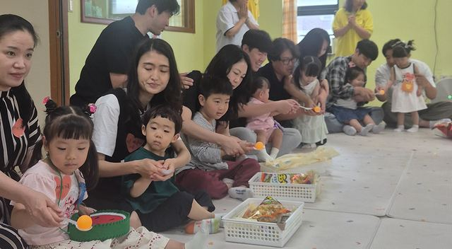
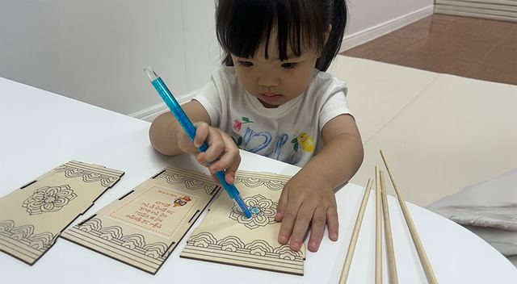

FAITH 공동체 > 유치부 (Hoper)
유치부 (Hoper)

Hoper(호퍼) 유치부
호퍼 유치부는 하나님 자녀로서의 자존감을 가지고 믿음의 사람들로 자라기를 소망하며(Hope) 함께 하나님의 사랑을 배우고 나누는 공동체입니다.
- 부장
- 장혜정 사모
Hoper's WORSHIP 호퍼 유치부 예배


영아부 (12개월-3세)
영아부는 부모님과 함께 예배드리며, 믿음의 첫 걸음을 시작합니다.

유치부 (4-7세)
유아부는 선생님, 친구들과 함께 예배드리며, 스스로 예배하는 기쁨을 알아갑니다.
- 시간
- 주일 오전 11시
- 장소
- 교육관 3층 유치부 예배실
Hoper's HOPE 호퍼 유치부 비전
말씀 순종하는 삶을 통해 말씀의 영광을 바라보는 유치부
예수님의 성품을 닮아가는 유치부
내가 보배롭고 존귀한 하나님의 자녀임을 깨달아 자신과 이웃을 사랑하고 존중하는 유치부
Hoper's EVENT 호퍼 유치부 활동

주일공과
하나님의 성품교육을 통해 하나님의 성품을 배우고 익히면서 하나님을 알아가고 하나님의 성품을 내면화하는 시간입니다.

성경학교
다양한 주제와 영역의 활동들을 통해 하나님을 더 가까이 만나는 시간입니다.

가족초청예배
가족들을 초청하여 함께 예배를 드리며 유치부 예배를 경험해보고 은혜를 나누는 시간입니다.

성품특별공과
12개의 성품 교육 중 하나의 성품 교육이 끝날 때마다 다양한 음악, 신체, 미술 활동 등 영역과의 연계활동을 통해 성품에 대한 단원 정리 활동을 갖는 시간입니다.